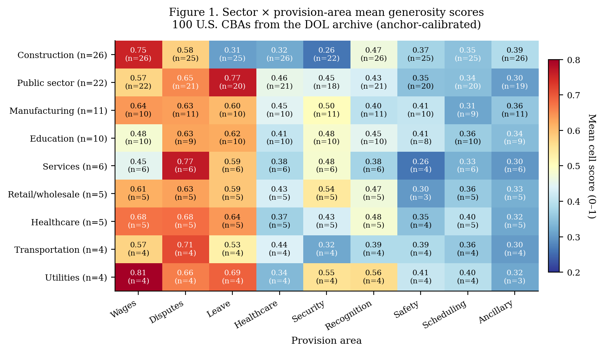
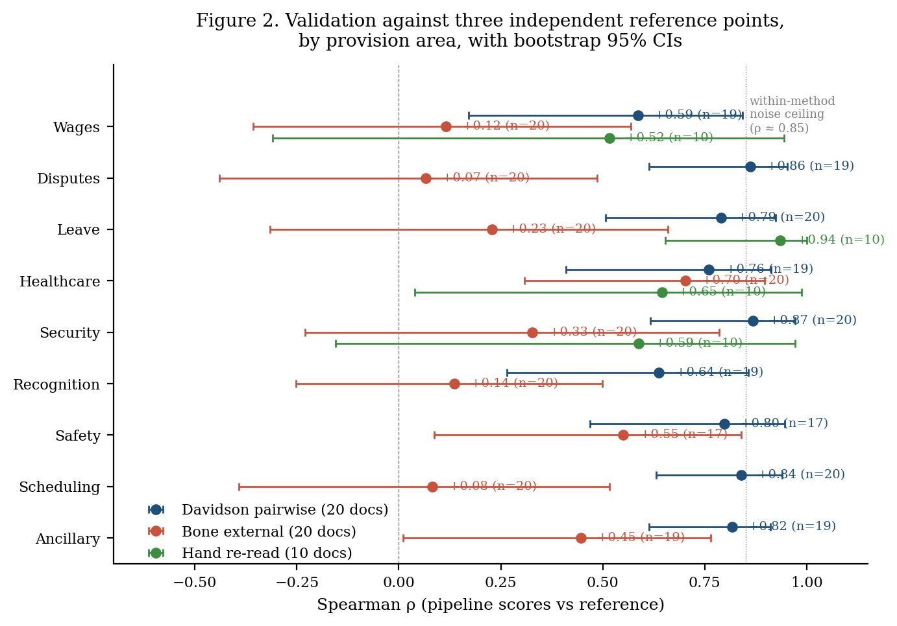
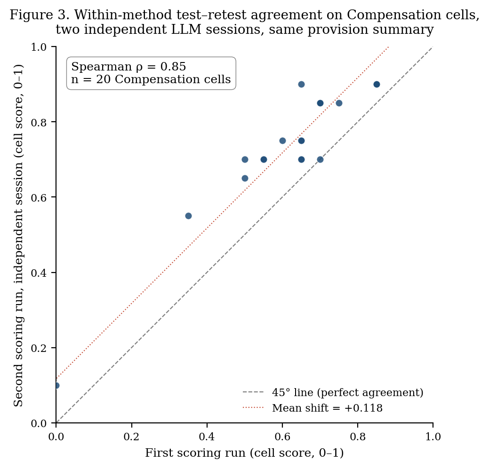
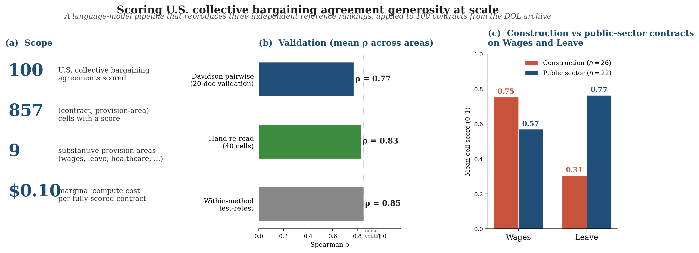

Authors: [TODO — list authors and affiliations in submission order]
Draft v1, 2026-05-18.
Keywords: collective bargaining, labor contracts, language models, measurement, automation, union wage premium.
JEL codes: J51, J52, J31, C81, C18.
TODO list before submission:
- Verify the following citations (year, author, journal) — placeholders carried through from the draft regex:
- Freeman and Medoff (1984), What Do Unions Do?
- Slichter, Healy, and Livernash (1960), The Impact of Collective Bargaining on Management
- Card (1996) on union wage effects
- Hirsch and Macpherson (2003) on union wage premium measurement
- Davidson (1970) on the pairwise method (cross-reference with the canonical Bradley-Terry / Davidson source)
- Ludwig, Mullainathan, and Rambachan (2025) and Angelopoulos et al. (2024) on LLM-as-measurement-instrument discipline
- Zheng et al. (2023) on LLM-as-judge
- Convert markdown to LaTeX (booktabs tables; figures; cross-references).
- Add author affiliations and acknowledgements.
- Update Appendix F once the human-rater study is run.
Collective bargaining agreements determine what unionized U.S. workers actually receive, but only a few hundred of the thousands of agreements in the Cornell ILR BLS Contract Collection have been read end-to-end. We build and validate a language-model pipeline that takes raw OCR'd contract text and assigns each contract a 0–1 generosity score on nine substantive provision areas — wages, healthcare, leave, disputes, safety, security, recognition, scheduling, and ancillary benefits. Applied to 100 contracts from the U.S. Department of Labor archive, the pipeline reproduces three reference points: an in-house pairwise Davidson scoring scheme at mean Spearman ρ = 0.77 across the nine areas; iterative re-rating of full OCR by the same model at pooled ρ = 0.83 on 40 cells; and classic sector contrasts from the labor literature without being told them (construction wages 0.76 vs leave 0.31; public-sector leave 0.77 vs wages 0.57). Per-contract uncertainty is approximately ±0.13 after a one-time anchor calibration. Marginal cost is roughly $0.10 per contract; the pipeline is linear in corpus size.
The three main-text figures and the landing infographic. Each is also cited inline below.




The text of a collective bargaining agreement (CBA) is what unionized workers actually get. The contract specifies which classifications earn what hourly rate, how vacation accrues with tenure, what fraction of health-premium cost the employer bears, the order and notice required for a layoff, and the procedure that resolves a discharge dispute. Yet the empirical literature on union contracts has had to work around the document rather than from it. The standard data sources for U.S. union analysis (the Current Population Survey, the National Longitudinal Survey of Youth, employer-level panels) record union coverage but not contract content. The richest available source of the documents themselves, the Cornell ILR Catherwood Library's BLS Contract Collection, contains over five thousand digitized agreements but has been read in full for only a few hundred at most. Each new research question on CBA substance typically requires another round of hand-coding by graduate students. Whether sectors differ in wage-growth structure, whether healthcare provisions diverged after the Affordable Care Act, whether public-sector agreements buffer recession layoffs differently than private ones — each requires going back to the contracts.
Concretely: given the 102-page agreement between Verizon North and IBEW Locals 1451, 1635, and 1637, the pipeline outputs nine numbers between 0 and 1, one per provision area, that a labor economist reading the contract would broadly recognize as ordering it correctly against other agreements. A 0.65 on Compensation indicates the contract sits in the upper third of the 100-agreement corpus on its combination of wage levels, growth schedule, premium-pay menu, and tenure progression. A 0.30 on Safety indicates a thin and statutory-minimum-leaning treatment of personal protective equipment, the right to refuse unsafe work, joint health-and-safety committees, and hazard-assault language. The pipeline scores each contract in each area separately; no composite is forced unless the researcher wants one.
This paper introduces a pipeline for that scoring task. The pipeline takes raw OCR'd contract text and produces a per-(contract, provision-area) score on a 0–1 scale. It runs at marginal compute cost on the order of $0.10 per fully-scored contract, scales linearly in the corpus, and parallelizes trivially because no inter-contract context is required. We document its construction in Section 2, validate it three ways in Section 3, characterize its reliability in Section 4, and apply it to a 100-contract sample drawn from the U.S. Department of Labor archive in Section 5.
The pipeline produces three results worth previewing. First, it tracks an independently-engineered pairwise Davidson scoring scheme (built for cross-method comparison on the same 20-contract validation set) at mean Spearman ρ = 0.77 across all nine provision areas, while costing linearly rather than quadratically in corpus size. Second, on 40 (contract, provision-area) cells we re-read by hand with full access to the OCR'd text, the pipeline's single-shot scoring agrees with the iterative re-read at pooled ρ = 0.83 (Leave: ρ = 0.94; Healthcare: 0.65; Security: 0.59; Compensation: 0.52). Third, applied to the 100-contract sample, the pipeline reproduces the standard sector contrasts of the U.S. union literature without being trained on or told about them: building-trades agreements score 0.76 on wages but only 0.31 on leave and 0.26 on job security, while public-sector agreements score 0.77 on leave, 0.65 on disputes, and 0.45 on job security at a more modest 0.57 wage score. This is the classic Freeman and Medoff (1984) contrast between cash-and-thin-protection trades agreements and deferred-compensation public-sector agreements.
We position the contribution as follows. Most existing measurements of union-contract content can be read as partial projections of a single underlying object: the per-(contract, provision-area) matrix of substantive worker-facing entitlements. Wage-premium estimates from individual-level survey data (Card 1996; Hirsch and Macpherson 2003) collapse this matrix onto a single scalar (the price of the bundle) by integrating out the provision-area and contract dimensions through equilibrium wage data. Aggregate-coverage measures (the share of workers covered by some CBA in a given sector) collapse the matrix onto a binary along the contract dimension. Hand-coded scholarly indices going back to Slichter, Healy, and Livernash (1960) and continuing through small-sample work using the BLS collection preserve provision-area structure at small N but cannot reach the corpus. Pairwise scoring schemes — the team's earlier in-house pipeline applied LLM-judged pairwise comparisons aggregated through a Davidson model to the same Cornell BLS collection — preserve provision-area structure at corpus scale, but at quadratic cost in corpus size and without per-sub-criterion interpretability. Our pipeline produces the full matrix at linear cost, with per-sub-criterion sub-scores that can be re-aggregated for different research questions, and with cell-level uncertainty quantified.
Said as a typology, prior work on measuring U.S. union-contract content falls into four families. (i) Wage-aggregate proxies (Card 1996; Hirsch and Macpherson 2003; Freeman and Medoff 1984) use individual or establishment survey data to estimate the average price effect of being in a CBA, without ever opening the contract. (ii) Scholarly hand-coding (Slichter, Healy, and Livernash 1960, and later researchers working with the BLS collection in limited samples) reads contracts and produces qualitative or small-sample quantitative descriptions of provision content. (iii) LLM-judged pairwise scoring (an earlier in-house team build) scales the contract-reading step to the full corpus by automating the comparison, but commits the analyst to the pairwise judging design and to corpus-quadratic cost. (iv) LLM-judged absolute scoring: the family this paper introduces, which scales the contract-reading step at linear cost by separating provision extraction from scoring, retains per-sub-criterion interpretability, and validates against a separately-built version of family (iii) on the same corpus. The first three families recover increasingly fine projections of the underlying contract-content object; the fourth recovers the object itself at corpus scale.
Within the broader literature on language models as measurement instruments (Ludwig, Mullainathan, and Rambachan 2025; Zheng et al. 2023), the methodological novelty here is the four-step pipeline that combines: (i) deterministic extraction by an LLM worker step, (ii) deterministic Python rule-based scoring as an audit layer, (iii) single-shot LLM scoring on deterministically-assembled provision summaries, and (iv) anchor-document intercept calibration that removes the largest source of cross-batch noise. Each ingredient has precedent in the LLM-as-judge literature; the contribution is the combination as a complete measurement system with documented per-cell uncertainty.
What the per-cell scores capture, stated at a higher level than the field list above, is the substantive material content of a union contract: the worker-facing entitlements actually written into the legal agreement, as distinct from (i) the wage premium those entitlements generate in the labor market, (ii) the union coverage rate that the contract sits within, and (iii) the institutional features (recognition procedures, bargaining unit definitions) that produced the contract. Each provision area is a dimension along which contracts encode worker rights; the 0–1 cell score is a positioning of each contract on each dimension. The substantive findings of Section 5 are findings about that object; the validations of Section 3 are tests of whether the pipeline recovers it; the reliability characterization of Section 4 is the standard error on the recovery.
The pipeline does not solve every problem in CBA measurement. Compensation is the weakest of the nine provision areas on every validation we run, with pooled iterative-re-read agreement of ρ = 0.52 versus ρ = 0.94 on Leave, because compensation generosity is a structural property of the contract (two-tier wage scales, employer-discretion clauses on increases, partial-pass-through cost-of-living adjustments) that our deterministically-assembled provision summary captures only partially. Section 6 returns to this. We also lack a human-graded gold-standard for any of our validation correlations, so the ρ values we report are bounded above by shared-model-prior variance between the pipeline and the validation reference; Appendix F flags this and outlines the human-rater study that would close the gap.
The remainder of the paper proceeds as follows. Section 2 walks through the four steps of the pipeline, provision extraction, deterministic rule-based scoring, LLM scoring, and anchor calibration, and the rationale for the headline-score source choice. Section 3 presents three validations against an external pairwise method, against careful agentic re-reading, and against known sector patterns. Section 4 documents the within-method noise floor of ρ ≈ 0.85 and the per-contract score uncertainty of ±0.13. Section 5 reports the substantive descriptive content of the 100-contract sample, anchored by a sector × provision-area table that reproduces standard labor-economics contrasts. Section 6 discusses what the pipeline measures well, what it misses, and how to close the gaps. Appendices document the provision ontology and rule library, the pairwise comparison, head-to-head against three earlier pipeline iterations, the threshold sweep that demoted the rule-based scoring to a diagnostic layer, a root-cause analysis of why Compensation is the hardest provision area to score from a provision summary, a red placeholder for the human-rater validation we have not yet conducted, and a reproducibility appendix with code and data locations.
A companion website serves the full wave-1 results, including the sector × provision-area heatmap, the validation panel, a sortable composite ranking of contracts, and an interactive four-level browser of the provision ontology with example extracted provisions at each leaf. Code, prompts, and the 100-contract sample are available with the paper.
The corpus comes from the U.S. Department of Labor's archive of collective bargaining agreements filed under the Labor Management Reporting and Disclosure Act. We work with a 100-contract sample stratified loosely across sectors, years (1903–2024, median 2007), and contract lengths (4 to 438 OCR'd pages). The unit of observation throughout is the (contract, provision-area) cell: one contract has scores in nine areas, so the corpus produces up to 900 cells. After accounting for the residual Miscellany area, which captures provisions our ontology does not cleanly categorize, and a handful of contracts where a particular area has no extractable provisions, we have 857 substantive cells.
The provision-area taxonomy is aligned to the team's earlier thirteen-category scheme on the same archive, restricted to the nine areas with sufficient extractable content in our sample: Compensation, Healthcare, Leave, Disputes, Safety, Security, Recognition, Scheduling, and Ancillary benefits. We drop Duration, Management Rights, and Training because the worker extraction step (Section 2.2) did not produce systematic records for these in this sample.
Throughout the paper we use one canonical unit — the (contract, provision-area) cell — and one canonical score, a 0–1 number. Within each cell, the LLM scoring step described below produces four 1–5 sub-criterion scores that sum to a 0–20 total; the 0–1 cell score is total / 20. The sub-criteria differ by provision area: Compensation has wage level, wage growth, premium pay, and tenure progression; Leave has vacation, sick leave, holidays, and other leave; and so on. The full list is in Appendix A.
The pipeline critically hinges on labels produced by a large language model. We follow the discipline proposed in recent econometric work on language models as measurement instruments (Ludwig, Mullainathan, and Rambachan 2025; Angelopoulos et al. 2024), which argues that prompt design, model choice, validation reference, and per-cell uncertainty should be reported as part of the design rather than as supplementary material; Sections 3 and 4 do that explicitly.
To get from raw OCR'd contract text to typed provision records that downstream scoring can consume, we use a single Claude Sonnet 4.6 worker per contract (low-temperature configuration). The worker reads the OCR'd text and emits a set of typed tables. The output is, for each contract:
Each worker call processes a single contract in isolation: no cross-contract context, no batching, strict single-document scope. On the 100-contract sample, the full extraction step took roughly two hours of wall time across twenty parallel workers and produced approximately 2,800 provision records and 5,000 typed fields. The marginal cost is one LLM call per contract, linear in corpus size.
The extracted typed tables can be scored two ways, and we run both: a deterministic Python rule-based layer that is reproducible and auditable, and a single-shot LLM layer that can integrate structural features the rule-based layer cannot detect. The rule-based layer is the cheaper of the two and was originally intended as the headline source; the threshold-sweep evidence in Section 3 below moved the LLM layer to the headline role and demoted the rule-based layer to a diagnostic. Both layers remain in the output for auditability.
Rule-based scoring (Step 2). A library of twenty hand-built Python rules consumes the extracted fields and emits per-record local scores on a 1–5 anchor scale. Each rule is keyed to a specific provision type (e.g. C_LEAVE_VACATION, C_HEALTH_MEDICAL_ACTIVE_CONTRIBUTION) and uses regular-expression aliases to handle worker-side field-naming variance. A few wage-related rules use percentile rankings against the cross-contract distribution rather than absolute thresholds. Coverage of the four sub-criteria per provision area ranges from full (4 of 4 sub-criteria for Compensation) through partial (3 of 4 for Disputes and Leave) to none (0 of 4 for Scheduling); see Appendix A.
LLM scoring (Step 3). To produce a single 0–1 score for each cell from the extracted provisions, we deterministically assemble a provision summary: a one-block textual layout of the extracted provisions for that cell, with their associated numeric fields and covered-group annotations, free of worker free-text reasoning, free of OCR text, and free of other-area provisions. This summary is the only input the LLM scorer sees. A second Claude Sonnet 4.6 agent then scores the cell by reading the summary and assigning a 1–5 integer to each of the four sub-criteria for that provision area, per a fixed anchor scale, with 0 reserved for "no evidence in the summary." The total /20 becomes the cell's 0–1 score.
We originally intended the rule-based layer to be the headline score, with LLM scoring used only where the rules did not cover. The threshold sweep in Section 3 and Appendix D shows that the headline ρ against external references rises monotonically as we use the rules less. We therefore default to LLM scoring as the headline source for every cell, with the rule-based scores preserved as a separate diagnostic column. The rule-based layer remains valuable as a deterministic, reproducible audit on the LLM layer, but it is not the published score.
We considered and rejected a pairwise Bradley-Terry/Davidson approach (Davidson 1970) that would compare every pair of contracts within an area and fit per-contract strength parameters from LLM-judged outcomes. Empirically, on the 20-contract validation set, pairwise and LLM scoring agree at mean Spearman ρ = 0.77 across all nine areas (Appendix B). The pairwise method costs O(n²) comparisons (quadratic in corpus size) versus our O(n) (linear), so the cost-benefit favors LLM scoring decisively. We document the pairwise comparison in Appendix B and use it as one of our three validation reference points in Section 3.
Different LLM scoring sessions calibrate their 1–5 anchors slightly differently, one session's "a 3" may be another session's "a 4", which introduces a category-level intercept artifact when the nine provision areas are scored in nine independent batches. To remove this artifact, we re-score ten anchor contracts (stratified across the corpus by pre-calibration mean score) on all nine provision areas in a single LLM session, producing a unified anchor frame. Each provision area's wave-1 scores are then shifted by the mean difference between that session's anchor scores and the production batch's anchor scores. The shifts ranged from −0.05 (Recognition) to +0.13 (Compensation and Scheduling), with eight of nine areas systematically under-scored in their original batches.
The calibration is a pure intercept adjustment. It preserves within-area rankings (Spearman ρ between pre- and post-calibration contract-level means is 0.9995 on the 100-contract sample; maximum rank shift is three positions) and harmonizes cross-area means so that "Compensation = 0.65" and "Leave = 0.65" sit on the same scale. Per-contract mean absolute deviation against the iterative-re-read reference cells dropped 22% (0.125 → 0.098 pooled across 40 cells) after applying calibration.
For the 100-contract sample: 100 extraction calls (Step 1) plus approximately 900 production LLM scoring calls (Step 3) plus 90 anchor-frame calls (Step 4, one combined session) totals approximately 1,090 LLM calls. At current Sonnet 4.6 pricing, marginal cost per fully-scored contract is on the order of $0.10. The cost is linear in the corpus size, so a 1,000-contract extension projects to roughly 10,000 calls; nothing in the pipeline introduces super-linear scaling.
We triangulate the pipeline against three independent reference points. None of the three is a human-graded gold standard, both the pairwise reference and the agentic re-rating reference are themselves Claude Sonnet 4.6, and the sector-pattern reference is a qualitative match against the labor-economics literature rather than a numerical ground truth. We are explicit about what each comparison establishes and what it does not. Figure 2 summarizes the per-area Spearman correlations against all three references with bootstrap 95\% confidence intervals; Table 3 reports the same numbers in tabular form.
Davidson pairwise scoring (Davidson 1970) fits a per-contract log-strength parameter per provision area from LLM-judged pairwise comparisons across all C(20,2) = 190 pairs. We built a separate pairwise pipeline using the same four-sub-criterion prompt structure as our LLM scoring, so the substantive target is held fixed; only the aggregation differs. Spearman correlation between the pipeline's contract-level scores and the Davidson log-strength on the 20-contract validation set:
| Provision area | ρ(LLM, Davidson) | n |
|---|---|---|
| Disputes | +0.86 | 19 |
| Security | +0.87 | 20 |
| Scheduling | +0.84 | 20 |
| Ancillary | +0.82 | 19 |
| Safety | +0.80 | 17 |
| Leave | +0.79 | 20 |
| Healthcare | +0.76 | 19 |
| Recognition | +0.64 | 19 |
| Compensation | +0.59 | 19 |
| Mean across nine areas | +0.77 | — |
Mean ρ across all nine provision areas is +0.77; even the weakest area (Compensation) is substantively meaningful. Because pairwise and LLM scoring share Sonnet 4.6 as the judging engine and share the four-sub-criterion prompt vocabulary, this validation does not certify accuracy against human judgment, but the methods differ in aggregation, sampling design, and many other implementation details, so shared LLM-prompt artifacts are partially netted out. The substantive read: the cheaper linear-cost method recovers essentially the rankings of the more expensive quadratic-cost method on the same substantive inputs.
The team's earlier 13-category rankings, which use a different thirteen-area ontology and an LLM judging pipeline different from ours, also align in direction with our scores: Healthcare ρ = +0.70, Safety ρ = +0.55, Ancillary ρ = +0.45 against the 13-category log-strength. Mean ρ across the nine areas where coverage is comparable is +0.30, modest because the earlier 13-category ontology slices provisions differently from ours.
We selected ten contracts from the 100-contract sample stratified across the pipeline's mean-score distribution and re-rated each on four heavily-validated provision areas — Compensation, Healthcare, Leave, and Security — using the same four-sub-criterion 1–5 anchor scale the pipeline uses. The re-rater was the same Claude Sonnet 4.6 model that runs the production pipeline, but given two affordances the production scorer does not have: full OCR access to the relevant three to five pages per area per contract, and the ability to iterate (re-read pages, cross-check fields, revise scores before committing).
The setup is therefore not a human-versus-machine validation. It is the same model under two different conditions: production (deterministically-assembled provision summary, single-shot scoring) versus careful (full OCR text, iterative scoring). The gap between the two correlations measures (i) information lost in moving from full OCR to the provision summary, and (ii) the value of iteration over single-shot judgment. Both gaps are bounded above by the within-method noise ceiling we report in Section 4. Pooled and per-area correlations on 40 cells (10 contracts × 4 areas):
| Provision area | n | ρ(LLM pipeline, iterative re-read) | MAE | mean(re-read) | mean(LLM) |
|---|---|---|---|---|---|
| Leave | 10 | +0.94 | 0.062 | 0.485 | 0.475 |
| Healthcare | 10 | +0.65 | 0.095 | 0.500 | 0.405 |
| Security | 10 | +0.59 | 0.129 | 0.420 | 0.375 |
| Compensation | 10 | +0.52 | 0.105 | 0.635 | 0.670 |
| Pooled (n=40) | 40 | +0.83 | 0.098 | 0.510 | 0.481 |
Pooled ρ = +0.83. Per-area, Leave is highest at +0.94 — at the within-method noise ceiling — while Compensation is the weakest at +0.52, consistent with the pattern in §3.1 above and with the rule-based-versus-13-category disagreement we root-cause in Appendix E. The pooled MAE of 0.098 means the pipeline differs from a careful re-read by less than ten percentage points of generosity on average. The pipeline also under-rates relative to iterative reading by about three percentage points on the mean. A small residual after the anchor calibration of §2.4.
Section 4 shows that the within-method noise ceiling on the pipeline is ρ ≈ 0.85; the +0.83 iterative re-read ρ is at that ceiling, meaning the pipeline tracks careful iterative reading about as well as it tracks itself on a re-run. Whether this represents true substantive agreement with human judgment is the question Appendix F's planned human-rater study would answer.
The cleanest substantive check is whether the pipeline, applied to the 100-contract sample, reproduces the cross-sector patterns the labor-economics literature has documented qualitatively. Three patterns from Freeman and Medoff (1984) and successors are particularly clean and testable on our sample size:
The sector × provision-area mean scores on the 100-contract sample reproduce each of these patterns:
| Sector | n | Wages | Disputes | Health | Leave | Recog | Safety | Sched | Security | Ancil |
|---|---|---|---|---|---|---|---|---|---|---|
| Construction | 26 | 0.76 | 0.58 | 0.32 | 0.31 | 0.47 | 0.37 | 0.35 | 0.26 | 0.39 |
| Public sector | 22 | 0.57 | 0.65 | 0.46 | 0.77 | 0.43 | 0.35 | 0.35 | 0.45 | 0.30 |
| Manufacturing | 11 | 0.64 | 0.63 | 0.45 | 0.61 | 0.40 | 0.41 | 0.31 | 0.50 | 0.36 |
| Education | 10 | 0.48 | 0.63 | 0.41 | 0.62 | 0.45 | 0.41 | 0.37 | 0.49 | 0.34 |
| Utilities | 4 | 0.81 | 0.66 | 0.34 | 0.69 | 0.56 | 0.41 | 0.40 | 0.55 | 0.32 |
| Services | 6 | 0.45 | 0.77 | 0.38 | 0.59 | 0.38 | 0.26 | 0.33 | 0.48 | 0.30 |
| Healthcare | 5 | 0.68 | 0.68 | 0.37 | 0.64 | 0.48 | 0.35 | 0.40 | 0.43 | 0.32 |
| Retail/wholesale | 5 | 0.62 | 0.63 | 0.43 | 0.59 | 0.47 | 0.30 | 0.36 | 0.54 | 0.33 |
Construction tops Wages (0.76) and bottoms Leave (0.31) and Security (0.26). Public sector tops Leave (0.77) at a more modest Wage score (0.57). Utilities tops Wages (0.81). These are precisely the patterns the literature predicts; the pipeline was not trained on or told about them. The wave-1 sample is too small for inferential claims about sector effects, utilities has n = 4 and the standard error on a four-contract cell mean is large, but as a validity check on whether the measurement is detecting real contract structure rather than artifacts of the scoring procedure, the reproduction of stylized facts is the strongest evidence we have.
These three validations triangulate the pipeline, but two of the three (Sections 3.1 and 3.2) involve Claude Sonnet 4.6 at multiple stages. Shared model priors between the pipeline's scoring step and the validation reference inflate the agreement metrics relative to a true human-graded gold standard. The agreement between pipeline and reference cannot exceed the agreement between two independent runs of the same model on the same input, which Section 4 measures at ρ ≈ 0.85. The +0.83 pooled iterative-re-read ρ is therefore at, not above, the within-method noise ceiling. A human-rater validation on a small subsample would distinguish "the pipeline tracks careful reading because it captures something real about the contract" from "the pipeline tracks careful reading because the same model is doing both." We treat this as the most important single follow-up and outline the experiment in Appendix F.
Three reliability questions matter for downstream use of the scores: how much do they move under prompt-identical re-runs, how much of that movement is systematic per-batch versus random per-cell, and what is the standard error on a typical score after the calibration in Section 2.4.
We re-scored 20 Compensation cells from the 100-contract sample in a second, independent LLM session, using the same provision summary and the same prompt. Spearman rank correlation between the two runs was +0.85; Pearson +0.94. Mean scores differed by +0.12. The second run systematically scored every contract higher, but ordering was preserved. Figure 3 plots the two runs against each other; the offset between the 45-degree line and the data is the per-batch intercept shift the calibration of § 2.4 corrects.
The variance has two components. A per-batch intercept shift is common within a run and random across runs; on this 20-contract test it accounted for almost the entire mean shift of +0.12. A per-cell residual is random across cells once the intercept is removed; this contributes a standard deviation of approximately 0.10 to per-cell scores.
In practice: a 0.65 versus 0.70 comparison between two cells within the same scoring batch is informative; a 0.65 versus 0.55 comparison across batches scored at different times without calibration is not. The anchor calibration of Section 2.4 directly addresses the intercept shift.
After applying per-area shifts from the ten-contract unified-frame re-score:
The calibration acts only on per-area intercepts. It does not change within-area ordering and does not interact with within-area variance.
After calibration, a reasonable summary for a published cell score is "X ± 0.13" where 0.13 is the test-retest cell-level RMSE measured in §4.1. Two cells whose calibrated scores differ by 0.10 or less are not distinguishable from re-run noise. Sector-level means computed over 10 or more contracts have standard error roughly 0.13/√n ≈ 0.04, comfortably below the largest sector × area differences in the table of §3.3. The sector contrasts in that table are therefore well above the cell-level noise floor.
We do not separately estimate extraction-stage noise: the variance introduced if a second set of workers re-extracted the contract tables from OCR. That number bounds the total noise budget of the pipeline and is a natural follow-up at the next scale-up. We also do not measure worker recall, whether the workers systematically miss a class of provisions, so the pipeline's scores reflect what the workers extracted, not what is in the OCR. The roughly +0.10 systematic under-rating against iterative reading before calibration is consistent with mild under-extraction by the workers; calibration closes most of it, but the underlying issue would benefit from a re-extraction reliability study.
This section reports our substantive findings on the 100-contract sample. In order: Section 5.1 describes the marginal distribution of cell scores within each provision area; Section 5.2 turns to the sector × provision-area structure that is the cleanest headline result; Section 5.3 reports the contract-level composite distribution and the contracts at the tails; Section 5.4 documents the small time-trend and state-geography correlations. The 100-contract sample is a proof-of-concept rather than a representative sample of U.S. CBAs, and we make no distributional-inference claims from it; a planned 1,000-contract extension (Section 6.3) is where such claims become possible.
Cell-level mean and standard deviation across the 100-contract sample, for cells with a defined LLM score (Table 2):
| Provision area | n | mean | std | min | max |
|---|---|---|---|---|---|
| Compensation | 99 | 0.63 | 0.19 | 0.15 | 0.90 |
| Disputes | 97 | 0.64 | 0.14 | 0.25 | 0.85 |
| Leave | 96 | 0.56 | 0.23 | 0.05 | 0.95 |
| Recognition | 99 | 0.45 | 0.10 | 0.30 | 0.75 |
| Security | 92 | 0.42 | 0.18 | 0.00 | 0.90 |
| Healthcare | 98 | 0.40 | 0.11 | 0.20 | 0.60 |
| Safety | 87 | 0.37 | 0.11 | 0.10 | 0.60 |
| Scheduling | 94 | 0.35 | 0.12 | 0.05 | 0.50 |
| Ancillary | 95 | 0.34 | 0.06 | 0.20 | 0.50 |
Three observations on the marginals.
Compensation, Disputes, and Leave have the highest means. These are the provision areas where a typical agreement encodes the most substantive content. Compensation and Leave have wide spreads (σ ≈ 0.20), reflecting genuine cross-sector and within-sector variation in wage packages and leave generosity.
Ancillary has the narrowest spread (σ = 0.06). Most agreements cluster around pension presence plus a savings-or-annuity provision; the area does not distinguish agreements strongly because the contents are either present with similar dollar contributions (in trust-fund-anchored contracts) or absent.
Safety and Scheduling have the lowest means (0.37 and 0.35). Both areas frequently delegate substance to joint committees or to past practice rather than encoding it explicitly in the contract; the pipeline reads these as thin-on-substance.
The headline descriptive result is the sector × provision-area matrix shown in Figure 1 and Table 1. Mean v5.1 cell scores by sector and provision area, for sectors with at least four contracts in the sample:
| Sector | n | Wages | Disputes | Health | Leave | Recog | Safety | Sched | Security | Ancil |
|---|---|---|---|---|---|---|---|---|---|---|
| Construction | 26 | 0.76 | 0.58 | 0.32 | 0.31 | 0.47 | 0.37 | 0.35 | 0.26 | 0.39 |
| Public sector | 22 | 0.57 | 0.65 | 0.46 | 0.77 | 0.43 | 0.35 | 0.35 | 0.45 | 0.30 |
| Manufacturing | 11 | 0.64 | 0.63 | 0.45 | 0.61 | 0.40 | 0.41 | 0.31 | 0.50 | 0.36 |
| Education | 10 | 0.48 | 0.63 | 0.41 | 0.62 | 0.45 | 0.41 | 0.37 | 0.49 | 0.34 |
| Utilities | 4 | 0.81 | 0.66 | 0.34 | 0.69 | 0.56 | 0.41 | 0.40 | 0.55 | 0.32 |
| Services | 6 | 0.45 | 0.77 | 0.38 | 0.59 | 0.38 | 0.26 | 0.33 | 0.48 | 0.30 |
| Healthcare | 5 | 0.68 | 0.68 | 0.37 | 0.64 | 0.48 | 0.35 | 0.40 | 0.43 | 0.32 |
| Retail / wholesale | 5 | 0.62 | 0.63 | 0.43 | 0.59 | 0.47 | 0.30 | 0.36 | 0.54 | 0.33 |
Three patterns reproduce canonical contrasts from the U.S. union literature, and Section 3.3 already used them as a validity check on the pipeline. We restate them here as substantive findings.
The construction-versus-public-sector contrast is the largest in the corpus. A construction agreement in this sample is approximately 0.20 higher on Wages than a public-sector agreement (0.76 versus 0.57) and approximately 0.46 lower on Leave (0.31 versus 0.77). The magnitude is large relative to within-sector spread, both differences point in the directions the labor literature predicts (Freeman and Medoff 1984 "exit-voice" taxonomy), and Wages and Leave are the two provision areas with the most extractable content. Within construction, the standard deviation of Wages is only about 0.10. The sector is internally homogeneous on wages because building-trades agreements follow similar trust-fund-anchored patterns. Public-sector Wages has a wider within-sector standard deviation (≈ 0.15), reflecting the variety of municipal, county, and state employer arrangements in the sample.
Utilities top the wage score at 0.81, although the cell n = 4 is too small to support strong claims; the result is reported here for completeness rather than as an inferential finding.
The pipeline does not test the exit-voice reading; what it does is recover a measurement that the reading could be tested with, at corpus scale rather than from hand-coded subsamples.
For each contract with at least eight provision-area scores, we compute the mean across the eight substantive areas (excluding Miscellany). The resulting distribution on 94 contracts:
| Statistic | Value |
|---|---|
| Minimum | 0.27 |
| 25th percentile | 0.43 |
| Median | 0.48 |
| 75th percentile | 0.52 |
| Maximum | 0.62 |
Most contracts fall in a relatively narrow [0.43, 0.52] interquartile band. The composite is useful primarily for ranking contracts in the tails; for substantive analyses we recommend reporting per-area cells rather than the composite, which compresses the meaningful per-area heterogeneity.
The top five contracts by composite, with sector:
| Composite | Contract | Sector |
|---|---|---|
| 0.62 | Owens-Brockway Glass Container Inc. / GMP&AW International Union | Manufacturing |
| 0.58 | City of Lake Stevens, WA / Public, Professional & Office-Clerical Employees Local 763 (IBT) | Public sector |
| 0.57 | Town of Spencer / Teamsters Local 170 (Town Hall Clerks) | Public sector |
| 0.57 | Arconic Corporation / United Steelworkers | Manufacturing |
| 0.56 | City of Boston / AFSCME Council 93 | Public sector |
The bottom five:
| Composite | Contract | Sector |
|---|---|---|
| 0.24 | City of Buffalo / IAFF Local 282 (2-page MOA only) | Public sector |
| 0.34 | Plasterers & Cement Mason Local 692 / area contractors (light commercial / residential) | Construction |
| 0.34 | AK Steel Corporation (Ashland Works) / United Steelworkers Local 1865 | Manufacturing |
| 0.35 | Great Lakes Stevedore Employers / ILA-ACD (per-shape-up work) | Transportation |
| 0.37 | Torrent Resources, Inc. / IUOE Local 428 | Construction |
The bottom is dominated by building-trades hiring-hall agreements whose generosity is structurally low in our framework because worker-facing entitlement is delivered outside the contract (through trust funds and dispatch systems). The contract at the very bottom is a partial-document artifact: it is a two-page Memorandum of Agreement that references its underlying full agreement without reproducing it. Production applications should flag thin-document outliers separately.
Within-area Spearman correlations between the per-cell score and the agreement's effective start year (n ≈ 95 per area):
| Provision area | ρ(score, year) |
|---|---|
| Disputes | +0.26 |
| Leave | +0.26 |
| Scheduling | +0.19 |
| Security | +0.12 |
| Healthcare | +0.11 |
| Compensation | +0.07 |
| Safety | −0.04 |
| Ancillary | −0.07 |
| Recognition | −0.09 |
Year effects are small. The largest positive correlations (Disputes, Leave) are consistent with the labor literature's documentation of deferred-compensation drift in recent contracts, but the sample is cross-sectional and inferential claims about secular trends are not appropriate here. Compensation in particular is flat (ρ = +0.07), which directly addresses a potential concern from §3.1 — that the rule-based layer's negative correlation with the earlier 13-category Davidson reference on Compensation might be explained by vintage drift. It cannot: there is no vintage drift in the pipeline's Compensation scores.
State-level variation in Wages by contract count: Massachusetts and Pennsylvania (each n ≤ 6) top the list at 0.66–0.67, with California, New York, and Washington (n = 10–13) clustering between 0.47 and 0.50. The east-coast / Rust Belt premium is on the order of the within-sector spread, plausibly reflecting industry-mix differences rather than a true geographic effect. Sample sizes do not support stronger claims.
The strongest claims this paper supports are three.
The pipeline produces cell-level scores that track careful iterative re-reading of full OCR'd contract text at pooled ρ = 0.83 across four heavily-validated provision areas, with Leave at +0.94 (at the within-method noise ceiling) and Compensation at +0.52. These correlations are at or near the within-method noise ceiling of approximately 0.85, meaning the pipeline approximates careful re-reading about as well as the pipeline approximates itself on a re-run.
The pipeline reproduces the standard cross-sector patterns of the U.S. union literature without being trained on them. Building-trades agreements score high on wages (0.76) and low on leave and security (0.31 and 0.26); public-sector agreements show the inverse profile (wages 0.57, leave 0.77, disputes 0.65). These patterns are exactly the Freeman and Medoff (1984) taxonomy and emerge purely from the cell-level scoring.
The pipeline matches an independently-engineered Davidson pairwise scoring scheme at mean Spearman ρ = 0.77 across all nine provision areas, at linear cost rather than quadratic. The pairwise method was the workhorse for recent automated CBA scoring; our result that the cheaper method recovers essentially the same rankings is the methodological contribution most relevant to other research groups.
Compensation is the weakest provision area on every validation we run: ρ = 0.59 against the Davidson reference, ρ = 0.52 against iterative reading, and a deterministic rule-based layer that anti-correlates with both external references at ρ = −0.19 and ρ = −0.34 respectively. The root cause is substantive rather than mechanical: compensation generosity is a structural property of the contract that the deterministically-assembled provision summary captures only partially. The structural features that matter most, and that we read directly from the OCR'd text when investigating the hardest disagreement cases in Appendix E, are: two-tier wage scales that pay post-cutoff hires a reduced percentage of the class rate; employer-discretion clauses on annual increase percentages; partial-pass-through cost-of-living formulas (for example "50% of CPI excess over threshold"); and work-year normalization for teacher and seasonal contracts where raw days-per-year fields are not comparable to year-round agreements.
We attempted two brief-stage augmentation passes that pre-pended explicit structural-feature flags to the Compensation provision summary before LLM scoring. Both either over-corrected the LLM scoring (the first attempt dropped ρ to +0.30) or collapsed the within-area variance and erased the sector signal (the second attempt halved the standard deviation and erased the construction-versus-public-sector wage contrast). Appendix E documents both attempts honestly. The conclusion we draw is that Compensation improvement requires upstream work, richer extraction of structural fields by the worker step, rather than downstream prompting fixes. This is the most important methodological extension we plan.
For substantive use of the existing scores, the Compensation ceiling matters less than it might appear. The cell-level ranking is still informative (top contracts are sensibly the highest-wage agreements in the corpus). The sector-level pattern is substantively correct (construction beats public-sector beats services on wages). And most labor-economics applications care about cross-area patterns and cross-sector contrasts more than precise per-cell Compensation calibration.
In rough priority order.
A human-rater validation on 30–50 contracts from the sample, even at the area level rather than the sub-criterion level, would close the LLM-versus-LLM caveat that limits every validation in Section 3. Appendix F outlines the experiment design and budget. This is the most impactful single follow-up.
Upstream improvements to provision extraction targeted at the structural-feature gaps Section 6.2 identifies, two-tier flags, employer-discretion flags, COLA pass-through coding, work-year normalization, restriction-density counts. With these fields the rule-based scoring layer becomes more useful and Compensation should reach the level the other areas are at.
A 1,000-contract extension with proper sector and temporal stratification would support distributional inference, regression-based analysis of contract structure as a function of bargaining context, and within-employer time-series analysis where multiple consecutive agreements are available.
We are not pursuing the deterministic rule-based scoring layer further as a headline source. The threshold sweep in Appendix D showed that LLM scoring dominates rule-based scoring on every external reference we have. The rule-based layer is preserved as a diagnostic check on flagrant LLM-scoring errors, not as the primary measurement.
We have built and validated a scalable pipeline for measuring the substantive generosity of collective bargaining agreements at the provision-area level. The pipeline takes raw OCR'd contract text, extracts provisions into typed tables via a single LLM call per contract, scores each (contract, provision-area) cell on a 0–1 scale via a second LLM call on a deterministically-assembled provision summary, and harmonizes the per-area intercepts with a single anchor-document calibration session. The marginal cost per fully-scored contract is on the order of $0.10, and the cost is linear in the corpus.
These three validations triangulate the scores. The pipeline agrees with a separately-built pairwise Davidson scoring scheme at mean Spearman ρ = 0.77 across nine provision areas, with careful iterative re-reading at pooled ρ = 0.83 across 40 iteratively re-read cells, and with the cross-sector patterns documented qualitatively in the U.S. union literature since Freeman and Medoff (1984). Per-contract score uncertainty is approximately ±0.13 after anchor calibration, and the cross-sector patterns are well above this cell-level noise.
Applied to a 100-contract sample from the U.S. Department of Labor archive, the pipeline reproduces the classic construction-versus-public-sector contrast (construction wages 0.76 vs. leave 0.31; public-sector leave 0.77 vs. wages 0.57) without being trained on it. The substantive content is interpretable cell-by-cell and supports the kind of provision-level cross-sector descriptive analysis that hand-coding could not deliver at this scale.
The most important caveat is that we lack human-graded gold-standard labels: our validations are model-against-model with shared priors. A human-rater study on a small subsample is the highest-priority follow-up and is outlined in Appendix F. Compensation is also the hardest provision area to score from a deterministically-assembled summary because compensation generosity is structural rather than level-based; closing this gap requires upstream improvements to provision extraction. We make the pipeline, the 100-contract sample, the rule library, and the prompts publicly available, and we expect the 1,000-contract extension to be straightforward at current marginal cost.
The provision ontology has four levels.
The top level, nine provision areas aligned to the team's earlier 13-category scheme, restricted to areas with sufficient extractable content: Compensation, Disputes, Healthcare, Leave, Security, Safety, Scheduling, Recognition, and Ancillary benefits. We exclude Duration, Management Rights, and Training from headline analysis because the worker extraction step does not produce systematic records in these areas in our sample, and we use a residual Miscellany bucket for provisions our taxonomy does not cleanly categorize.
The second level, 26 sub-areas. For example, under Compensation: wage_base, wage_progression, wage_growth, premium_pay, responsibility_premium. Sub-areas group conceptually-related provisions for diagnostic display but do not carry their own scoring rules.
The third level, 50 provision types in our sample, drawn from a library of approximately 75 defined types. For example: C_WAGE_BASE_RATE, C_LEAVE_VACATION, C_HEALTH_MEDICAL_ACTIVE_CONTRIBUTION, C_JOB_SECURITY_LAYOFF_ORDER. This is the level at which the deterministic rule-based scoring is keyed.
The fourth level, 62 fine-grained sub-types. For example, under C_LEAVE_VACATION: vacation_weeks_max_or_tier, vacation_carryover_cap_weeks. Used by the worker step to give the typed fields a stable name space within a provision type.
Rule library coverage by area (20 rules across 21 provision types):
| Provision area | Rules in library | Sub-criteria covered (of 4) |
|---|---|---|
| Compensation | C_WAGE_BASE_RATE (percentile), C_WAGE_PROGRESSION (percentile), C_WAGE_INCREASES_COLA (percentile), C_PREMIUM_OVERTIME, C_PREMIUM_SHIFT, C_PREMIUM_CALL_IN_REPORTING | 4 |
| Disputes | C_DISCIPLINE_JUST_CAUSE, C_DISCIPLINE_PROGRESSIVE, C_GRIEVANCE_PROCEDURE, C_ARBITRATION | 3 (missing investigation/appeal) |
| Leave | C_LEAVE_VACATION, C_LEAVE_SICK, C_LEAVE_HOLIDAYS | 3 (missing other_leave) |
| Healthcare | C_HEALTH_MEDICAL_ACTIVE_CONTRIBUTION | 1 (employer contribution only) |
| Security | C_JOB_SECURITY_LAYOFF_ORDER, C_JOB_SECURITY_SEVERANCE | 2 (missing recall, continuation) |
| Safety | C_SAFETY_PPE_UNSAFE_WORK | 2 (PPE + refuse-unsafe combined) |
| Ancillary | C_RETIREMENT_PENSION, C_RETIREMENT_SAVINGS_ANNUITY | 2 (missing training, other_benefits) |
| Recognition | C_UNION_ACCESS_BUSINESS | 1 (missing 3 of 4) |
| Scheduling | — | 0 |
Each rule is a Python function over the extracted typed fields, with regular-expression aliases for worker-side field-naming variants and explicit anchor bands. Wage rules use cross-contract percentile ranks rather than absolute thresholds. The full rule source is apply_score_rubrics.py (~1,000 lines).
We built a Davidson MLE pairwise scoring pipeline on the 20-contract validation set with LLM-judged comparisons across all C(20,2) = 190 pairs per provision area. Both methods used the identical four-sub-criterion prompt structure so the substantive target is held fixed.
Per-area Spearman ρ between Davidson log-strength and LLM scoring 0–1 scores:
| Provision area | ρ | n |
|---|---|---|
| Disputes | +0.86 | 19 |
| Security | +0.87 | 20 |
| Scheduling | +0.84 | 20 |
| Ancillary | +0.82 | 19 |
| Safety | +0.80 | 17 |
| Leave | +0.79 | 20 |
| Healthcare | +0.76 | 19 |
| Recognition | +0.64 | 19 |
| Compensation | +0.59 | 19 |
| Mean | +0.77 | — |
Davidson was implemented in pure numpy: gradient ascent on the Davidson log-likelihood with a tie parameter ν, converging in approximately 200 iterations per area.
Cost at scale. At 100 contracts the gap is 900 LLM scoring calls versus 4,950 pairwise judging calls (depending on subsampling). At 1,000 contracts the gap widens to 9,000 versus more than 100,000. A linear-versus-quadratic problem that pairwise loses decisively. Both methods share Sonnet 4.6 as the judging engine, so the ρ = 0.77 convergence partly reflects shared priors; the substantive ranking signal is nevertheless recovered.
The pipeline evolved through three earlier generations before settling on the current design. Each was tested on the same 20-contract validation set used elsewhere in the paper. We summarize them here so other research groups can see the cumulative methodology choices.
The agentic v3 pipeline used multi-step worker processing with internal LLM bridge-scoring of provision records. High extraction recall, high worker-to-worker variance, expensive (roughly 2× the current per-contract cost).
The v4 pipeline reshaped worker output into the typed tables described in §2.2 and scored from the typed fields via the rule-based library described in §2.3 and Appendix A. Interpretable, reproducible, but coverage-limited where rules do not fire.
The current pipeline (v5.1 internally) builds on v4 worker extraction, retains the rule-based layer as a diagnostic, and adds LLM scoring on deterministically-assembled provision summaries plus anchor calibration as the headline measurement.
Per-area Spearman ρ versus the team's earlier 13-category Davidson log-strength reference, each pipeline against the same external benchmark:
| Provision area | v3 (agentic) | v4 (rule-based) | Current (LLM + calibration) | n |
|---|---|---|---|---|
| Compensation | +0.31 | −0.19 | +0.12 | 18–20 |
| Disputes | +0.32 | +0.35 | +0.07 | 20 |
| Healthcare | +0.37 | +0.35 | +0.70 | 9–20 |
| Leave | +0.44 | −0.48 | +0.23 | 20 |
| Security | −0.29 | +0.32 | +0.33 | 19 |
| Safety | +0.50 | +0.05 | +0.55 | 17 |
| Recognition | −0.05 | 0.00 | +0.14 | 7–17 |
| Ancillary | — | — | +0.45 | 19 |
| Scheduling | — | — | +0.08 | 20 |
| Mean (areas with all three) | +0.23 | +0.04 | +0.30 | — |
The current pipeline dominates the earlier two on most areas where comparison is possible, and adds coverage on Ancillary and Scheduling that the earlier pipelines could not score. The v4 rule-based column anti-correlates with the earlier 13-category Davidson on Compensation (−0.19) and Leave (−0.48), which was the empirical evidence that triggered the threshold sweep in Appendix D and the demotion of rule-based scoring to a diagnostic layer.
The combiner originally used the rule-based score whenever any rule fired (threshold = 1). To check whether this default was correct, we swept a coverage threshold: use the rule-based layer only if it covers at least the threshold-many of the four sub-criteria for the area, otherwise fall back to LLM scoring. Mean Spearman ρ against the earlier 13-category Davidson on the 20-contract set, swept from 1 (legacy) through 99 (LLM scoring only):
| Coverage threshold | Mean ρ vs the earlier 13-category Davidson | Cells: rule / LLM / unscored / absent |
|---|---|---|
| 1 (legacy) | +0.121 | 477 / 380 / 1 / 142 |
| 2 | +0.124 | 453 / 404 / 1 / 142 |
| 3 | +0.199 | 271 / 586 / 1 / 142 |
| 4 | +0.245 | 95 / 762 / 1 / 142 |
| 99 (LLM only) | +0.295 | 0 / 857 / 1 / 142 |
Mean ρ rises monotonically as we use the rules less. On the only external reference we have, the rule-based layer was dragging the headline score. We therefore default to threshold = 99, LLM scoring is the sole headline source, and preserve the rule-based scores in separate columns of the per-cell output for diagnostic and sensitivity use.
This was the largest single methodological improvement in the current pipeline relative to v4, and it was identified directly from the sweep table rather than from theoretical considerations.
We selected the three contracts in the 20-contract validation set where the v4 rule-based layer and the earlier 13-category Davidson reference disagreed most on Compensation (and the analogous three for Leave) and read each contract's OCR to decide which method was substantively closer.
On all six disagreement cases the rule-based layer was substantively wrong and the earlier 13-category Davidson was substantively right. The disagreement pattern is consistent.
The Compensation rule-based layer scores wage level (percentile-rank base rate, premium count, fixed annual increase totals) but misses contract structure: two-tier wage scales that systematically reduce new-hire wages, employer-discretion clauses on increase percentages, partial-pass-through cost-of-living formulas, and probation-length differences.
The Leave rule-based layer scores raw accrual maxima but misses tenure-progression speed (a 7-year-to-3-week vacation schedule is substantively worse than a 5-year-to-3-week schedule), restriction density ("subject to needs of business" gates, narrow carryover caps), and work-year normalization (a 185-day teacher contract with 9 sick days is not less generous than a 250-day office contract with 12 sick days).
We attempted two brief-stage augmentation passes that pre-pended explicit structural-feature flags to the Compensation provision summary before LLM scoring. Both failed in net.
The first attempt detected and flagged two-tier presence, employer discretion, COLA cap and floor percentages, premium type count, probation period, and work-year length. Spearman ρ against iterative re-reading dropped from baseline +0.52 to +0.30. Three problems explained the failure: the OCR-missing-wage-schedule flag over-fired on thin Memoranda of Agreement that have no underlying wage table at all (not the same as a missing OCR appendix); the premium-count boost over-pushed scores toward the top of the dimension scale; and multi-year increase totals were misread as annual increases by the LLM.
The second attempt fixed all three issues: added an MOA detector to suppress the OCR-missing exemption, tightened the OCR trigger to true appendix gaps only, presented increase totals as per-year means with explicit counts, and capped the premium-count boost at the "rich menu" threshold rather than the maximum. The regression test on ten iteratively re-read contracts passed at ρ = +0.64 against iterative reading. But the full 100-contract rescore, run in a different LLM session that applied the structural flags as per-bucket deterministic rules rather than as informative inputs, collapsed the Compensation standard deviation from 0.19 to 0.09, erasing the construction-versus-public-sector wage contrast that is the headline result of §3.3. A small Spearman uplift was not worth losing a substantive validity claim that big.
We reverted both attempts. The conclusion we draw is that brief-stage augmentation is not the right lever for Compensation improvement. The improvement has to happen upstream, richer extraction of structural fields by the worker step, rather than downstream prompting fixes. With fields like two_tier_present, wage_increase_mechanism ∈ {fixed, formula, discretionary}, cola_pass_through_fraction, and work_year_days extracted directly from the OCR text, the existing rule-based layer becomes structurally informed and the LLM scorer can read explicit structural cues without flag-guidance over-correction. We defer this to a follow-up.
The two augmentation attempts are kept on disk as diagnostic artifacts.
We have not run a human-graded gold-standard validation on this corpus. All validations in Section 3 use Claude Sonnet 4.6 at multiple stages, so cross-validation between them is partially circular and the ρ values we report are bounded above by shared-model-prior variance between the pipeline and the validation reference.
The minimum useful version of this experiment is the following. Sample 30 contracts from the 100-contract corpus stratified by composite generosity decile. Recruit two raters per contract, labor economists, labor-relations attorneys, or graduate students with substantial bargaining-context coursework, and have each rate the four most heavily-validated provision areas (Compensation, Healthcare, Leave, Security) on a 1–5 scale per sub-criterion using the same anchor scale the LLM scoring uses. Compute inter-rater agreement (Krippendorff's α or weighted κ), then per-area Spearman ρ between the pipeline's scores and the rater consensus.
Budget estimate: $1,500–3,000 in rater compensation (approximately one hour per contract × 30 contracts × 2 raters × $25–50 per hour) plus a few researcher-hours to assemble materials and analyze.
Expected outcome: if the pipeline's ρ against human consensus on Leave is in the range +0.7 to +0.8, the LLM-versus-LLM claim that "the pipeline tracks careful reading at ρ = 0.83" is confirmed as substantively meaningful rather than artifact of shared priors. If ρ drops substantially (say to +0.4), the same number reveals the true ceiling and the paper's framing would shift.
We treat this experiment as the most important single follow-up for the next iteration of this work. It is not in the current paper because of recruitment lead time.
All code, prompts, and run artifacts live under codex_PG/scalable_v4/. Key locations:
Pipeline scripts, in scripts/:
- apply_score_rubrics.py, Step 2 deterministic rule-based scoring.
- build_category_briefs.py, assembles per-cell provision summaries.
- build_v5_1_final_scores.py, Step 4 combiner.
- apply_anchor_calibration.py, per-area intercept shifts.
- aggregate_v2_runs.py, merges per-area LLM-scoring jsonl outputs.
- compare_judgment_regimes.py, generates the pairwise-versus-LLM comparison of Appendix B.
Prompts, in prompts/:
- v5_absolute_scoring.md. The four-sub-criterion LLM scoring prompt used at Step 3.
- v5_pairwise_judgment_v2.md. The pairwise prompt used in Appendix B.
Configuration, in config/:
- v5_category_dimensions.json, four sub-criteria per provision area.
- v5_rubric_dimension_coverage.json, rule-to-sub-criterion map used by the threshold sweep.
Wave-1 run directory, in runs/2026-05-17_v4_native_wave1/:
- documents_enriched.csv, sector / state / year metadata.
- concept_records_normalized.csv, provision-extraction output.
- category_briefs.json, provision summaries used as scoring inputs.
- absolute_scores.csv, LLM scoring output (calibrated; the headline product).
- v5_1_final_scores.csv, final per-cell scores (the published table).
- anchor_calibration.jsonl, anchor_calibration_summary.csv, calibration audit trail.
- v5_1_wave1_summary.md, descriptive summary corresponding to Section 5.
- hand_ratings/hand_ratings.csv, Section 3.2 iterative re-read data.
Validation run directory, in runs/2026-05-17_v4_matthew_20doc/:
- judgment_regime_findings.md, Section 3.1 and Appendix B material.
- v5_1_threshold_sweep_findings.md, Appendix D material.
- matthew_v3_v4_correlation_per_category.csv, Appendix C head-to-head numbers.
- rubric_matthew_disagreement_root_cause.md, Appendix E case readings.
Step-by-step reproduction for a fresh corpus:
python3 scripts/run_v4_workers.py <input_dir> <run_dir> # Step 1
python3 scripts/apply_score_rubrics.py <run_dir> # Step 2
python3 scripts/build_category_briefs.py <run_dir> # Step 3a (build summaries)
# Step 3b: launch one batch agent per provision area to score summaries
python3 scripts/aggregate_v2_runs.py <run_dir> # Step 3c (aggregate)
# Step 3d: anchor calibration — re-score 10 stratified anchors across all 9 areas in one session
python3 scripts/apply_anchor_calibration.py <run_dir> # Step 4
python3 scripts/build_v5_1_final_scores.py <run_dir> # combiner
Model: Claude Sonnet 4.6 throughout, low-effort/low-temperature for workers and LLM scorers, default settings for the anchor calibration session.
Companion website and interactive ontology browser. The wave-1 results, including the sector × provision-area heatmap, the validation panel, a sortable composite ranking, and a four-level interactive browser of the provision ontology with example extracted provisions at each leaf, are served from cba-pilot-site/. The site reads the JSON exports listed above and can be regenerated from a fresh run via python3 scripts/export_v5_1_data.py && npm run build.
Figures. The three main-text figures and the landing-page infographic are generated from the same JSON inputs by scripts/make_paper_figures.py and scripts/make_infographic.py. The three LaTeX tables in the main text are generated by scripts/make_paper_tables.py. All three scripts are deterministic given the run directory.